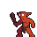

A dirty swamp goblin stole the last of your tomatos. Without them, you'll die! Luckily it dropped some of them on the way to it's den. Hungry bats are lured by the smell of your sweet tomatos. They want them all for themselves and attack you on sight. Save at least 5 of your precious tomatos before it's too late.

Click the bat to start
- Right arrow: move
- Space: defend
- Enter: reload game


